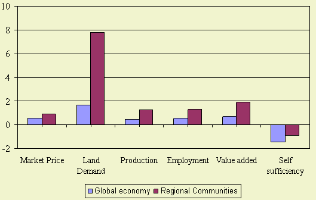
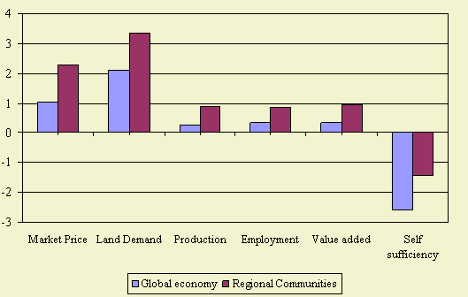
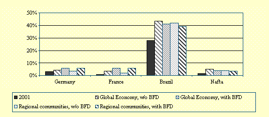
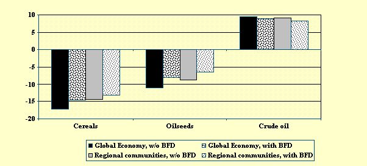
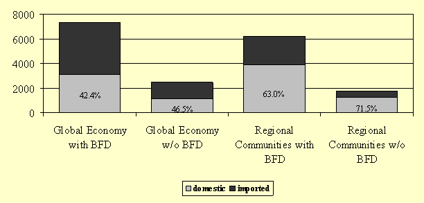
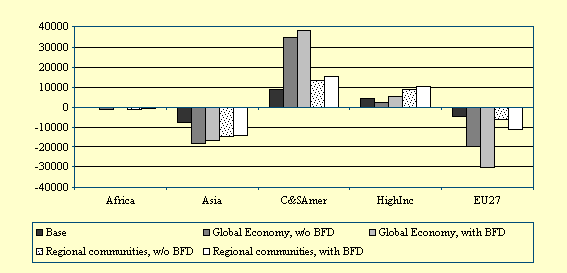

The biofuel directive with a target of 5.75% first generation bio-fuels leads to:

Figure 1 - Bio-fuels directive impact on Agriculture in the EU15, 2030-2001
growth rate for several indicators
The impacts are more pronounced in the Regional Communities scenario than in the Global Economy scenario as in the latter a larger share of bio-fuels will be imported from South America.

Figure 2 - Bio-fuels directive impact on Agriculture in the EU12, 2030-2001
growth rate differences.
For the EU12 a similar development can be observed however at a slightly lower level
compared to the EU15, which is mainly due to the lower production of bio-fuel crops
in the initial situation in the EU15.
Large impact of bio-energy policy
Without mandatory blending, the targets of the EU Biofuel Directive (BFD) will not be reached.
Mandatory blending has a strong impact on agriculture at global and European levels. The
long term trend of declining real world prices of agricultural products eases up. The
incentive to increase production in the EU will tend to increase land prices and farm income
in the EU and other regions. The EU will not be able to produce domestically the feedstocks
needed to produce the biofuels according to the BFD targets and therefore will incur a higher
agricultural trade deficit. Biofuel crop production expands in other highly industrialized
countries and especially in South America (Brazil).
Mandatory blending
Ambitious goals have been set by the EU Biofuel Directive (BFD) for the transport sector:
the minimum share of biomass or other renewable transport fuels must be 5.75% in 2010. Even
without a enforced use of biofuel crops through a mandatory blending, the share of biofuels
in fuel consumption for transportation purposes increase. This endogenous increase in biofuel
production is due to the fact that the ratio between crude oil price and prices for biofuel
crops changes in favour of biofuel crops (see, Banse et al. 2007). Under the ‘Global
economy, w/o BFD’ scenario biofuel shares increase. The highest increase is in the
already integrated market of Brazil where the initial 2001 share of more than 29% expands
to more than 42% in 2030. In Germany and France the endogenous growth of the biofuel share
leads to a biofuel consumption for transportation in 2030 at the levels of 4.0% in Germany
and 3.4% in France. These results reveal that without a mandatory blending the 5.75% biofuel
share will not be reached in the member states of the EU.

Figure 3 - Development of share of biofuels in fuel consumption for transportation for
selected regions, in %, 2001 and 2010
Impact on food prices
With an enhanced biofuel consumption as a consequence of the EU Biofuel Directive, prices
of agricultural products tend to increase. This is especially the case for those products
that are directly used as biofuel crops. Under the ‘Global economy’ scenario,
without a mandatory blending the real world prices for agricultural products tend to decline,
conforming to their long term trend (see Figure 4). This is caused by an inelastic demand
for food in combination with a high level of productivity growth. Under the ‘Global
economy with BFD’ scenario, agricultural world prices rise relative to the reference
scenario. However, the implementation of the EU Biofuel Directive will slightly reduce the
increase in crude oil prices. Given the assumption that biofuels lead to less CO2 emissions
than fossil fuel, the decline in the world oil price also indicates that the EU biofuel
directive leads to less CO2 emission on the global level.

Figure 4 - Changes in real world prices, in %, 2030 relative to 2001
Domestic production or imports?
Large scale production of ‘biofuel crops’ in Europe will be necessary to meet
the ambitious future targets. In the ‘Global Economy’ scenario, the demand for
biofuel crops used in the petrol sector will be 7.3 billion USD (in 2001 values) under the
minimum blending of 5.75%. Around 42% of these inputs will be produced domestically and 58%
of biofuel crops used in the petrol sector will come from imports (see Figure 5). If
mandatory blending is not enforced, the use of biofuel crops is much lower in all
scenarios: only 2.5 billion USD under the ‘Global Economy’ scenario and
only 1.7 billion USD under the ‘Regional communities’ scenario. The lower
demand under ‘Regional communities’ is due to a lower increase in income
compared to the ‘Global Economy’ scenario.

Figure 5 - Biofuel Crops Used in the EU-27 (in Mill USD, 2001), 2030
The degree of openness under both scenarios is also reflected in Figure 5. Under the ‘Global Economy’ scenario, without mandatory blending the share in imported biofuel crops used for biofuel production is 53.5%, while under the higher protection under the ‘Regional community’ scenario imported biofuel crops contribute only by 28.5% to total biofuel production. If the Biofuel Directive is enforced, imports in biofuel crops strongly increase even under the more protected ‘Regional communities’ scenario.
EU will become a net-importer
Figure 6 shows that the EU-27 will become net-importers of agricultural commodities used for
the production of biofuels under the biofuel scenarios. South and Central America as well
as other high income countries expand their net-exports in agricultural products for biofuel
production.

Figure 6 - Net biofuel crop trade, in bill. USD, Base situation and 2030
under different scenarios
Worldwide expansion
In all regions mandatory blending also leads to an increase in total agricultural output,
see Table 1. Comparing the results of the ‘Global economy’ scenario with and
without the BFD the strongest relative increase in agricultural output takes place in the
EU and South and Central America.
Table 1: Changes in agricultural production, in %, 2030 relative to 2001
|
Africa |
Asia |
C&SAmer |
HighInc |
EU27 |
EU12 |
EU15 |
World |
Biofuel Crops* |
|
|
|
|
|
|
|
|
Global Econ., w/o BFD |
183.8 |
115.6 |
143.6 |
33.6 |
-18.8 |
6.9 |
-28.5 |
70.1 |
Global Econ., with BFD |
187.8 |
116.5 |
150.9 |
34.7 |
-12.7 |
11.0 |
-21.5 |
73.3 |
Regional com., w/o BFD |
126.2 |
95.9 |
64.5 |
33.3 |
-1.5 |
4.7 |
-3.8 |
49.5 |
Regional com., with BFD |
128.3 |
96.2 |
67.5 |
34.0 |
11.1 |
9.2 |
11.9 |
52.5 |
Oilseeds |
|
|
|
|
|
|
|
|
Global Econ., w/o BFD |
178.2 |
108.0 |
131.1 |
99.4 |
7.6 |
35.9 |
1.9 |
99.7 |
Global Econ., with BFD |
181.1 |
108.6 |
135.4 |
102.0 |
26.0 |
47.9 |
21.5 |
103.6 |
Regional com., w/o BFD |
119.6 |
88.2 |
69.7 |
75.8 |
15.3 |
8.2 |
16.7 |
71.9 |
Regional com., with BFD |
124.3 |
88.9 |
76.9 |
78.6 |
40.1 |
22.4 |
43.7 |
77.0 |
* Biofuel crops are oilseeds, cereals and sugar.
Table 1 presents the results for changes in oilseed production which strongly expands under the policy scenarios. Oilseed production in the EU27 increases from 7.6% in the ‘Global economy w/o BFD’ scenario to 26% ‘Global economy with BFD’ scenario.
The BFD creates similar effects under the ‘Regional communities’ scenario. These production developments lead to a similar pattern of land use developments. Land use increases in all regions when comparing the impact of the EU Biofuel Directive. In the EU15 the decline in agricultural land use, as a consequence of the liberalization in the ‘Global economy’ scenario, is smaller under the BFD scenarios. This expansion of agricultural land use on a global scale, and especially in Southern America, might indicate a decline in biodiversity in these countries, as land use is an important driver for biodiversity.
Smaller income loss
Apart from the direct impact of an increase in biofuel demand on prices and production,
the changes in agricultural income from agricultural are significant. The income losses
will be a bit smaller under the BFD scenarios. The positive development in incomes is
mainly due to higher agricultural prices. Agricultural income outside the EU increase;
in Africa, Asia and South and Central America.
R&D investments needed
Without mandatory blending to stimulate the use of biofuel crops in the petroleum sector,
the targets of the EU Biofuel Directive will not be reached in 2010. Mandatory blending
leads to higher petrol prices, as biofuel feedstocks are not profitable to use in fuel
production given the current technologies. The increased demand for biofuel feedstocks
raises their price relative to the price for oil, and therefore adds to the challenge of
making biofuels competitive. If biofuels have to be competitive in the long run, therefore,
investments in R&D are needed to obtain higher agricultural yields or better conversion
technologies for the feedstocks. A limitation of this study is that EUruralis 2.0 focuses
only on 1st generation biofuels. Decisions on R&D investments should take into account
the 2nd generation biofuels, as these promise to be more cost effective and more effective
in reducing greenhouse gas emissions. The results heavily depend on the evolution of the
price for crude oil. The higher the crude oil price the more competitive biofuel crops
become for liquid fuel production.